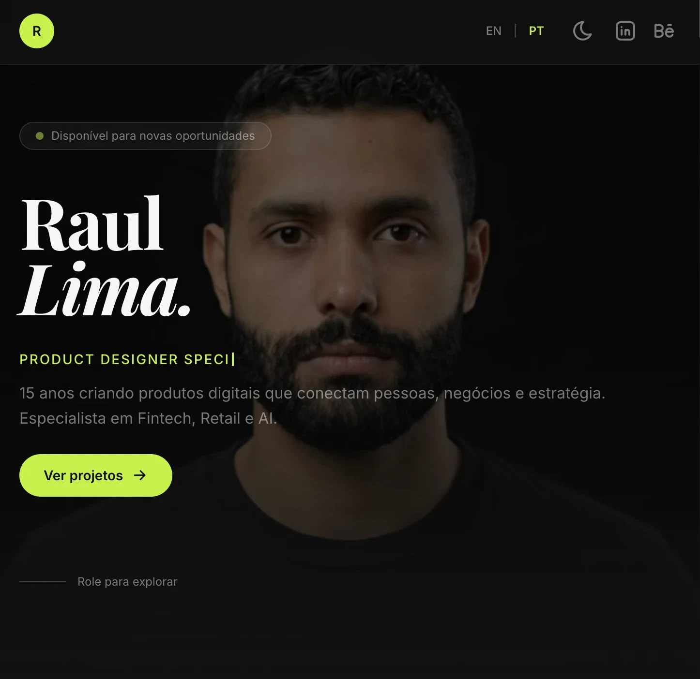

Do Código ao Sistema: um Design System Construído com IA
O DS Kalion é um Design System desenvolvido para garantir consistência visual e funcional no site do portfólio Raul Lima, servindo também como base para a evolução e futura migração do projeto Kalion.
O Kalion é uma plataforma digital voltada a pequenas empresas, que permite criar e gerenciar sua presença online de forma simples e integrada, sem a necessidade de desenvolver um site completo ou contratar múltiplas ferramentas.
Contexto
O projeto nasceu da necessidade de uma base de design system reutilizável para produtos como a Kalion. Em vez de começar em um protótipo isolado, usei um ambiente real como laboratório: o meu próprio portfólio.
O design system tinha dois objetivos: manter a consistência visual do site Raul Lima e servir como MVP para a Kalion, já validado em produção, com tokens, componentes documentados e regras de uso.
Todo o trabalho foi feito em parceria com IA: a auditoria, o código dos componentes, a documentação interativa e as rotinas que verificam se o sistema continua sendo usado do jeito certo.

O desafio era transformar um site que cresceu página a página em um sistema, sem tirar o site do ar e sem perder o que já funcionava.
Para isso foi preciso resolver frentes técnicas e de processo ao mesmo tempo:
- Identificar as inconsistências visuais e de acessibilidade espalhadas pelas páginas
- Migrar a aplicação atual para o design system, página por página
- Entender a linguagem e o ambiente (HTML, Tailwind, Vite) e as limitações de cada um
- Decidir a estratégia de construção: tokens, componentes e como documentá-los
- Criar skills que validam o uso dos componentes reutilizáveis
- Definir uma manutenção eficiente, com verificação antes de qualquer componente novo chegar ao site
Mais do que desenhar componentes, era preciso garantir que eles continuassem sendo usados depois da entrega.
A home antes e depois do design system. Arraste a linha para comparar: mesmo conteúdo, agora com componentes, tokens e estados consistentes.
O trabalho seguiu cinco etapas, da auditoria à rotina de manutenção.
Auditoria
Levantamento da aplicação atual: 20 inconsistências mapeadas, cada uma com evidência, severidade e o componente que a resolveria.
Estratégia
Ordem da migração, decisões de token (como o lime usado em texto no tema claro) e o modelo do shadcn/ui: uma classe base com variantes.
Base do DS
Ambiente e regras: código no GitHub, versões e previews na Vercel e um playbook interativo para ver componentes, tokens e regras de uso.
Implementação
Migração da home, dos cases, do styleguide e da área privada para os componentes, com verificação nos dois temas, nos dois idiomas e no teclado.
Manutenção
Uma skill de design system e um verificador automático que barram cores soltas, classes legadas e botões fora do padrão antes do deploy.
O design system foi criado para validar uma aplicação real. Primeiro mapeei as inconsistências do site; depois medi se o sistema, aplicado, resolvia cada uma delas.
Auditoria da aplicação
Cada problema foi classificado por categoria e severidade, com a correção apontando para um componente ou token.
Bugs visíveis
Classes que não geravam CSS, texto ilegível sobre o lime no tema claro e popovers sem borda.
Componentes divergentes
Quatro CTAs com quatro alturas, setas misturadas no texto e cards de mesmo papel com raios diferentes.
Cores e tipografia
44 cores escritas direto no HTML, oito receitas de borda e cinco combinações de título de seção.
Acessibilidade
Nenhum estado de foco desenhado e itens clicáveis que não funcionavam pelo teclado.
Números do mapeamento
20
inconsistências mapeadas na auditoria
44 → 0
cores escritas direto no HTML
32
regras de CSS legado removidas
10
componentes documentados com playground
Design System ao vivo
O playbook roda dentro do próprio site: tokens, componentes interativos, anatomia, medidas e tokens aplicados, nos dois temas e nos dois idiomas. Navegue abaixo ou abra em uma nova aba.
Skills
Instruções versionadas no repositório que a IA segue a cada tarefa. Elas mantêm o design system como fonte única da interface, do layout à manutenção.
DS Layout
Toda interface começa consultando a biblioteca. O layout é montado com os componentes existentes; quando nenhum serve, o componente é implementado e validado primeiro no design system e só depois chega à página.
DS Scale
Analisa a consistência da biblioteca antes de criar ou manter um componente. A regra: implementar em código com tokens, atualizar a biblioteca e documentar no playbook, para que a mudança tenha visibilidade.
DS Update
Valida as alterações feitas no design system, mapeia onde cada componente alterado é usado na aplicação e aponta os possíveis impactos antes da publicação.
DS Check
Verificação automática antes de cada deploy: o comando npm run ds:check barra cor inline, classes legadas, lime como texto, botões montados à mão e ícones sem aria-hidden.
Números medidos no código antes e depois da migração. O esforço é estimado pela quantidade de classes necessária para escrever cada componente.
100%
das 20 inconsistências mapeadas resolvidas, 85% delas só aplicando componentes que já existiam no design system
-75%
de código por componente: um CTA caiu de 10 classes para 2 e o toggle App/Web de 24 para 3, acelerando novas funcionalidades
-35%
de código de estilo na home: de 1.309 para 845 classes no HTML, uma página mais leve de carregar e mais rápida de evoluir